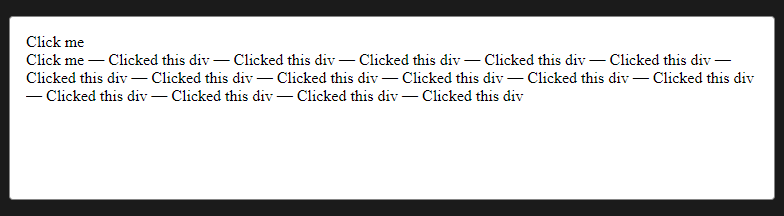

Notes
The Window Object
- Every JavaScript environment has a global object. Any variables that are created in the global scope are actually properties of this object, and any functions are methods of it. In browser environment, the global object is the window object, which represents the browser window that contains a web page.
- The Browser Object Model (or BOM for short) is a collection of properties and methods that contain information about the browser and computer screen.
- BOM only makes sense in a browser environment.
- This means that other environments (such as Node.js) probably won't have a window object, although they will still have a global object; for example, Node.js has an object called global.
- The window.location property is an object that contains information about the URL of the current page. For example: href, protocol, host, hostname, port, pathname and more.
- A new window can be opened using the window.open() method. This can also be assigned to a variable, so the window can then be referenced later in the code:
const popup = window.open('https://sitepoint.com','SitePoint','width=400,height=400,resizable=yes');
Don't forget: close() | moveTo() | resizeTo()
- The window.screen object contains information about the screen the browser is displayed on.
Properties: height, width, availHeight, availWidth, colorDepth
- Each window window object contains a document object. This object has properties and methods that deal with the page that has been loaded into the window.
- Cookies are small files that are saved locally on a user's computer. Cookies can be used to store information that can then be retrieved between requests. Cookies are also limited to storing up to 4KB of data, although 20 cookies are allowed per domain, which can add up to quite a lot of data.
- Cookies take the form of a text file that contain a list of name/value pairs separated by semicolons. For example, a cookie file might contain the following information:
"name=Superman; hero=true; city=Metropolis"
- Timing Functions:
setTimeout() :Accepts a callback to a function as its first parameter and a number of milliseconds as its second parameter. Try entering the following example into a console. It should show an alert dialog after three seconds (that's 3000 milliseconds):
window.setTimeout( () => alert("Time's Up!"), 3000);<< 4
setInterval() :Works in a similar way to window.setTimeout(), except that it will repeatedly invoke the callback function after every given number of milliseconds.
The previous example used an anonymous function, but it is also possible to use a named function like so:function chant(){ console.log('Beetlejuice'); }
- The setTimeOut() and setInterval() methods can be used to animate elements on a web page.
MDN The Content Template Element
- The <template> HTML element is a mechanism for holding HTML that is not to be rendered immediately when a page is loaded but may be instantiated subsequently during runtime using JavaScript.
The only standard attributes that the template element supports are the global attributes.
A DocumentFragment is not a valid target for various events, as such it is often preferable to clone or refer to the elements within it. Example:
HTML
<div id="container"></div><template id="template"><div>Click me</div></template>JavaScript
const container = document.getElementById("container");
const template = document.getElementById("template");
function clickHandler(event) {
event.target.append(" — Clicked this div");
}
const firstClone = template.content.cloneNode(true);
firstClone.addEventListener("click", clickHandler);
container.appendChild(firstClone);
const secondClone = template.content.firstElementChild.cloneNode(true);
secondClone.addEventListener("click", clickHandler);
container.appendChild(secondClone);Result

firstClone is a DocumentFragment instance, so while it gets appended inside the container as expected, clicking on it does not trigger the click event. secondClone is an HTMLDivElement instance, clicking on it works as one would expect.